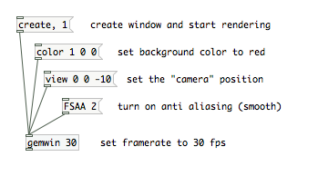
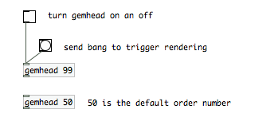
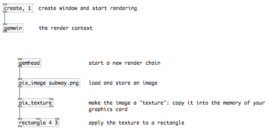
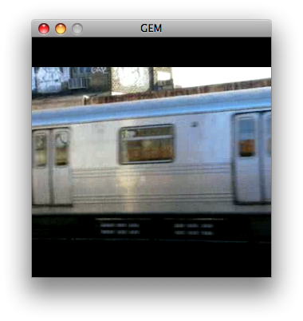

What GEM Is For
GEM is the part of Pd used for creating motion graphics. You can use GEM to create and play back videos and still images, mix videos, draw shapes in 2D and 3D, move objects and shapes around. Because it is part of Pd, you can make your visuals react to sounds, generate them from sounds themselves.
GEM & OpenGL
Since GEM is based in a large part on OpenGL, we recommend learning about OpenGL, and 3D graphics in general. The main OpenGL book is known as the "Red Book," titled OpenGL Programming Guide: The Official Guide to Learning OpenGL. It is outside the scope of this introduction to get into the details of 3D animation, but we will do our best to explain the basics.
The Very Basics of Rendering
When your graphics are "drawn" into the computer screen, we call this process rendering. Quite simply, your graphics may come from many different sources, such as video files, image files, and algorithmic animation, but at some point they all need to be combined together and displayed as pixels on your display, whether that display is a computer monitor, TV, LEDs, or a projector. Since you may not be drawing to all the pixels on your screen at once, we call this area a "window." You are probably very familiar with the concept of different windows on your computer.
The end result of the rendering process, the section of pixels that will be drawn to the screen, is called a "frame." Rendering happens discretely, at a certain number of frames per second (e.g. the framerate). Think of it as if the frames were images on a film strip, flashing by. Each one is an individual, separate image, and the illusion of motion is created just like in film, by showing sequences of slightly different frames. 25 frames per second (fps) is the default, and around 15 fps is about as slow as you can get before you lose the illusion of movement.
You should be aware that complex graphics may take a long time to render, possibly longer than the normal time between frames. In this case, you will not be able to reach the framerate you've set.
[gemwin]
[gemwin] is the GEM object that represents the window into which your graphics will be drawn. It controls the timing of your graphics, by scheduling when frames should be drawn to the screen based on the framerate, and discards them if they have taken to long to render (is this true?). By default it also clears the window every frame and sets it to a "background" color, specified as a list of R G B values.
Messages to [gemwin] change the size of that window, start and stop the rendering process, alter the position from which you look at your 3D , and control various other aspects of the window, such as antialising. Other messages to [gemwin] are explained in detail in the [gemwin] help patch.

Fig. 3: Some settings for [gemwin].
gemhead
[gemhead] is the start of a chain of graphics operations connected by patch cords that should be executed every frame. Drawing operations, including video effects, cascade from the top down, adding to each other flow downwards across objects. This chain of operations is triggered invisibly by [gemwin] according to the framerate you have set. You can turn this automatic rendering off by sending [gemhead] the message 0. Additionally, [gemhead] can be triggered manuall by a bang, which is useful when you want to control the order in which your graphics chains are drawn. With several gemheads, you can force this execution order by either giving them an argument or set their order number. Lower numbers are triggered first. The default ordering number is 50.

Fig. 4 The number argument after gemhead defines the order number.
Let's get started
We will start from the very beginning. GEM is based on the principles of OpenGL. You can work with images and videos (which are by the way a number of images that change with every frame), and you can also work with 3D shapes like 3D models, curves or simple rectangles.
Here is a first example that displays an image in your GEM window.
NOTE: This image "subway.png" needs to be placed in the same place as this patch..

Fig. 1: A Basic GEM patch. The key objects in this example are [gemwin] and [gemhead].
In order to open up a window into which you can draw stuff you have to create an object called [gemwin] which is your render context and you send it the messages "create" to create the window and "1" to start the rendering.
Starting with a [gemhead] you create a "render chain", that will draw things into your GEM window. In this case an image which is mapped onto a rectangle.
Here is how it looks like.

Fig. 2: GEM window
pix_objects and and 3D Shapes
The order in which objects are connected in Figure 1 might seem a little strange to you. From your real life experience you would probably do it the other way round: First grab a piece of paper or a t-shirt and then draw an image onto it. In Gem this is different, you create the image first and then you decide what you're going to do with it: project it on a square, a sphere, a 3d model.
Another basic principle of how OpenGL works, is that you distinguish between functions that affect your images and functions that affect your 3d shapes. Images have to be mapped onto 3d shapes. This means: usually no image will be drawn in the GEM window unless it is associated with a 3d shape, very often a rectangle, but of course there are also a lot of other shapes, more about that later.
Eventually, this gives us two sets of GEM objects: the one that relate to image processing and another set that relates to shapes and their transformations. The first group will get a lot of attention, especially in the beginning of this manual, but on the other hand, always have in mind, that images are only one aspect of OpenGL.
The objects that deal with textures are called pix objects and have the prefix "pix_" in their object name. The doorway into the shape world is called [pix_texture]. This object sends the image from your CPU memory to the graphics card memory from where it is "mapped" onto one or several shapes.